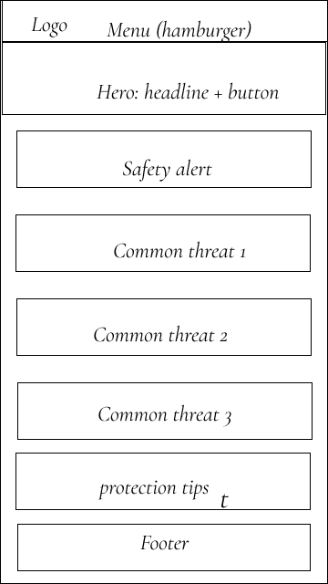
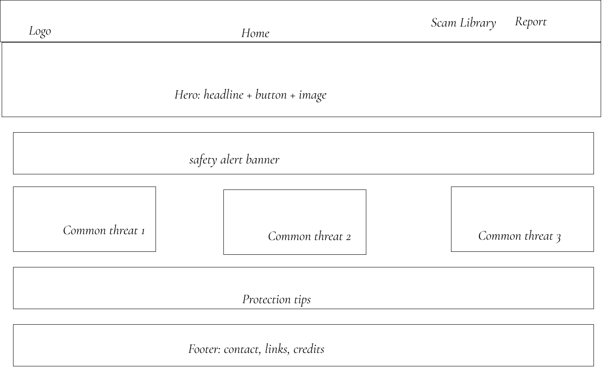

Site name
SafeNaija
"Safe" says what the site offers, and "Naija" is the familiar, friendly name Nigerians use for their country. Together they signal a safety resource made for Nigerians. The name is short, easy to remember, and easy to say aloud when recommending the site to family and friends.
Optional domain idea: safenaija.ng (availability not checked).
Site purpose
SafeNaija is a digital financial safety and fraud awareness website. It helps everyday mobile-money users, people who make digital transactions, and small business owners recognize, understand, report, and avoid online financial scams. The site provides:
- Home: an introduction to common digital financial threats, important safety alerts, and practical tips for protecting personal and financial information.
- Scam Library: at least fifteen types of fraud, including phishing, fake bank alerts, investment scams, impersonation, fraudulent loan offers, and online marketplace scams. Each entry gives the communication channel, warning signs, and prevention measures. Visitors open more detail in a modal dialog and can save scams to a personal watchlist.
- Report: an accessible form for submitting a suspected scam. After submitting, visitors see a confirmation page that displays the information they entered.
Scenarios
Questions a visitor might ask, which drive the content:
- I got a text saying my bank account is blocked. Is it a scam?
- How can I tell if an investment offer that promises to double my money is fake?
- A buyer sent me a transfer alert for my goods, but my account balance has not changed. What should I do?
- How do I report a scam, and what details should I include?
- Which scams should I watch for as a small business owner, and how can I keep a list to review later?
Color scheme
Deep navy for trust, teal for safety, and amber for warnings. Every color on this document comes from this scheme.
| Color | Name and hex | Where it is used |
|---|---|---|
| Navy #10324a | Header and footer backgrounds, headings, table header | |
| Teal #0b6b61 | Links, buttons, borders and focus outlines | |
| Amber #9a4a00 | Warning labels, risk-level highlights, and alerts | |
| Mist #f5f7fa | Page background and text on dark backgrounds | |
| Ink #1f2933 | Body text |
Typography
Two Google Fonts, chosen for readability on small screens:
- Poppins (600) for the site name and all headings.
- Open Sans (400 and 600) for body text, navigation, forms, and buttons.
Heading example: Spot the scam before it spots you
Body example: Never share your PIN, OTP, or BVN with anyone who contacts you first.
Wireframe
Home page sketches for small and large screens.

